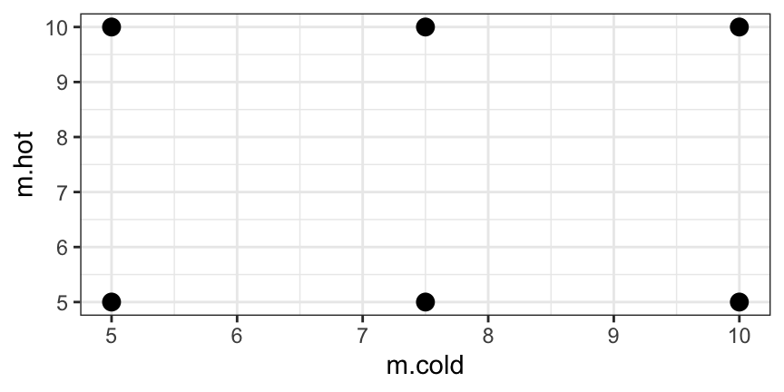
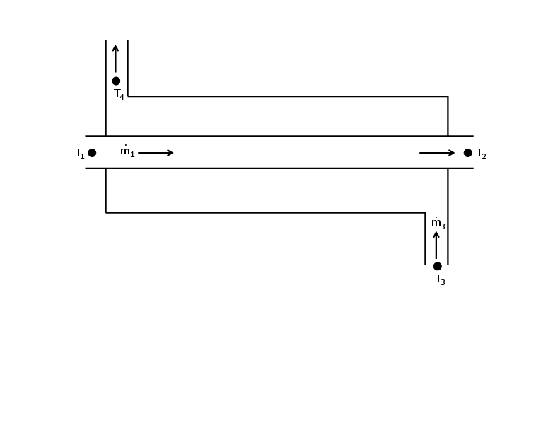
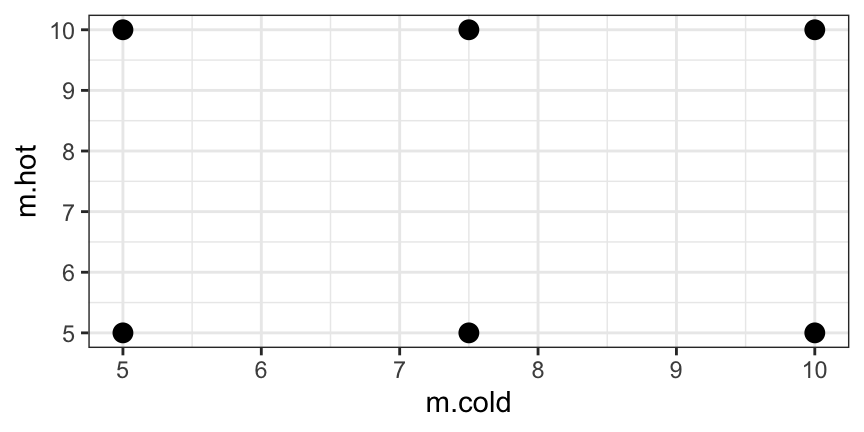
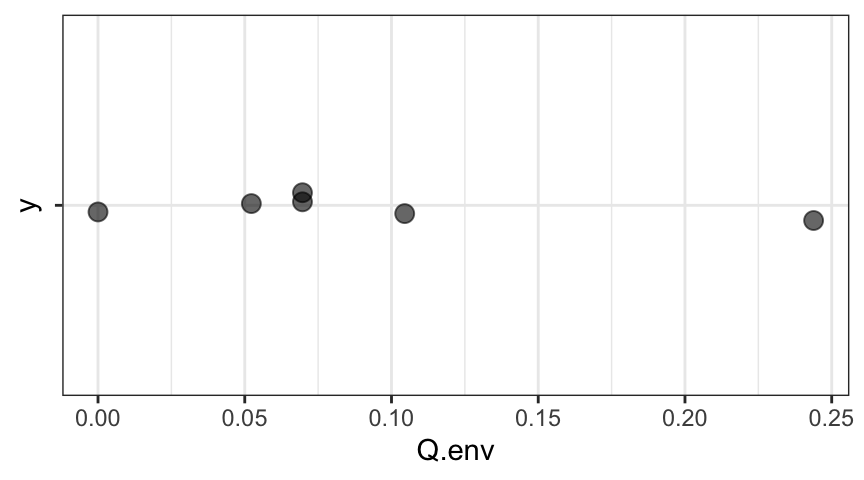
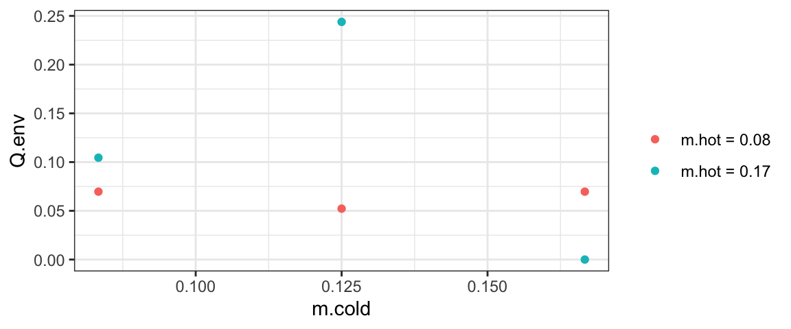

library(fastR2)
HeatX gf_point(m.hot ~ m.cold, data = HeatX, main = "Experimental Configurations", size = 3)
In this section will discuss several parts of the statistical analysis of a laboratory experiment involving a heat exchanger.
Figure fig-hxer shows a diagram illustrating the heat exchanger. Fluids of different temperatures flow in the annulus (\(\dot{m}_{3}\)) and in the inner tube (\(\dot{m}_{1}\)). The entire apparatus is insulated, so we expect little or no heat to be exchanged with the surroundings.

Mass flow rates (\(\dot{m}\)) are controlled via valves. Two mass flow rates (\(\dot{m}_{1}\) and \(\dot{m}_{3}\)) are measured by rotameters.1 Temperatures (\(T_{1}\)–\(T_{4}\)) are measured by thermocouples.2
Each observation consists of four~(4) temperature measurements and two~(2) mass flow rate measurements. Here is an example data set with one set of measurements at each of 6 experimental conditions:
library(fastR2)
HeatX gf_point(m.hot ~ m.cold, data = HeatX, main = "Experimental Configurations", size = 3)
The recorded flow rates are in L/min. We will convert them to L/sec and use seconds as our standard unit of time troughout the analyses.
HeatX <- HeatX |>
mutate(
m.hot = m.hot / 60,
m.cold = m.cold / 60
)We could also convert temperatures to degrees Kelvin, but since temperatures only appear as differences between two temperatures in the expression used here, we can leave them in degrees Celsius.
Table Table tbl-hxer-definitions contains notation and definitions of important quantities involved in the heat exchanger experiment.
| Symbol | Definition | Units | Estimate |
|---|---|---|---|
| \(\dot{Q}\) | heat transfer rate | \(\mathrm{W}\) | |
| \(\dot{m}\) | mass flow rate | \(\mathrm{kg}/\mathrm{s}\) | |
| \(C_{p}\) | specific heat | \(\mathrm{kJ}/(\mathrm{kg}\cdot\mathrm{K})\) | \(4.18 \pm 0.1\) |
| \(T\) | temperature | \(\mathrm{K}\) | |
| \(D\) | diameter of inner tube | \(\mathrm{m}\) | \(0.0143 \pm 0.0004\) m |
| (\(9/16 \pm 1/64\) inches) | |||
| \(L\) | length of the heat exchanger | \(\mathrm{m}\) | \(1.626 \pm 0.006\) |
| (\(64 \pm 1/4\) inches) | |||
| \(A\) | surface area of the inner tube (\(\pi D L\)) | m\(^{2}\) | |
| \(U\) | heat transfer coefficient | \(\mathrm{W}/(\mathrm{m}^{2} \cdot \mathrm{K})\) | |
| \(h\) | convective heat transfer coefficient (\(\approx 2 U\)) | \(\mathrm{W}/(\mathrm{m}^2\cdot \mathrm{K}\)) | |
| \(\Delta T_{lm}\) | logarithmic mean temperature difference | \(\mathrm{K}\) | |
| \(Nu_{D}\) | Nusselt number based on \(D\) | – | |
| \(Re_{D}\) | Reynolds number based on \(D\) | – | |
| \(Pr\) | Prandtl number | – | |
| \(\mu\) | dynamic viscosity | \(\mathrm{kg}/(\mathrm{m} \cdot \mathrm{s})\) | \(0.00102 \pm 0.00001\) |
| \(k\) | water thermal conductivity | \(\mathrm{W}/(\mathrm{m} \cdot \mathrm{K})\) | \(0.598 \pm 0.004\) |
The amount of heat exchanged between the hot and cold water can be determined from the temperature change and the mass flow rate as follows:
\[ \dot{Q}_{1} = \dot{m}_{1} C_{p} (T_{2} - T_{1}) \tag{10.1}\]
\[ \dot{Q}_{3} = \dot{m}_{3} C_{p} (T_{4} - T_{3}) \tag{10.2}\]
We can estimate the values of \(\dot{Q}\) from our data by direct caclulation:
C_p <- 4.18
HeatX2 <- HeatX |>
mutate(
Q.cold = m.cold * C_p * (T.cold.out - T.cold.in),
Q.hot = m.hot * C_p * (T.hot.out - T.hot.in),
Q.env = Q.cold + Q.hot
)
HeatX2If no heat were exchanged with the environment and all measurements were without error, then our two estimates of \(\dot Q\) would sum to 0. (Heat lost to one fluid is gained by the other.)
Assuming any loss to (or gain from) the environment is essentially constant for the apparatus over the experimental conditions analysed, we can use our 6 observations to estimate the amount of heat exchanged with the environment:
df_stats( ~ Q.env, data = HeatX2)gf_point( "" ~ Q.env, data = HeatX2, alpha = .6, cex = 3, jitter.data = TRUE)
From this we can compute either a p-value for the hypothesis test that the mean difference in heat change is 0 or create a confidence interval for the mean difference in heat change. The information above is enough to do this “by hand” using the standard error formula \(SE = \frac{s}{\sqrt{n}}\) and a t-distribution with \(n-1 = 5\) degrees of freedom.
SE = 0.08274 /sqrt(6); SE[1] 0.033778460.09003 + c(-1,1) * qt(0.975, df = 5) * SE # 95<!-- CI -->[1] 0.003199695 0.176860305t <- (0.08999 - 0) / SE; t[1] 2.6641242 * pt( -abs(t), df = 5 ) # p-value[1] 0.04466228Or we can let R do all the computations for us:
t.test( ~ Q.env, data = HeatX2)
One Sample t-test
data: Q.env
t = 2.6641, df = 5, p-value = 0.04466
alternative hypothesis: true mean is not equal to 0
95 percent confidence interval:
0.003159159 0.176813063
sample estimates:
mean of x
0.08998611 In our example data, there is modest evidence for exchange with the environment, but the estimated amount of heat gained from the environment is not very precisely estimated. Even at the highest end of the confidence interval, the heat exchanged with the environment is an order of magnitude smaller than the heat exchanged within in the apparatus.
Notes:
gf_point(Q.env ~ m.cold, data = HeatX2, color = ~ paste("m.hot =", round(m.hot,2)))
t.test( ~ Q.env, data = subset(HeatX2, Q.env < max(Q.env)) )
One Sample t-test
data: Q.env
t = 3.4701, df = 4, p-value = 0.02558
alternative hypothesis: true mean is not equal to 0
95 percent confidence interval:
0.01183725 0.10659609
sample estimates:
mean of x
0.05921667 Overall, we conclude that there is likely some heat exchanged with the environment, but the amount of heat exchange with the environment appears to be at most a small factor in this situation.
Estimating \(\dot{Q}\) with uncertainty is not possible from this data alone since since \(\dot{Q}\) is not measured directly, and we have only one measurement for each experimental condition (so no way to look at how variable such measurements are without additional information. Furthermore, the design doesn’t provide a method for estimating the uncertainty in \(\dot{m}\) and \(T\).
If, however, there are external estimates of the uncertainties for temperature and flow rate, and if we can assume these uncertainties are approximately independent, then we can use propagation of uncertainty to estimate the uncertainty in our estimates for heat exchanged. Such uncertainties might come from specifications of the equipment used or be based on past experience of the researcher.
For example, suppose that the uncertainties in temperature and flow rate measurements are approximately constant (over the range of temperatures involved): \(u_T\), and \(u_{\dot{m}}\). Then the uncertainty in the difference between two independent temperatures is \(\sqrt{ u_T^2 + u_T^2 } = \sqrt{2} u_T\), and we can estimate the uncertainty in \(\dot Q\) using the delta method.
If we estimate the uncertainty in measured temperatures to be \(1\) degree C and the uncertainty in flow rate to be \(0.5\) liters per minute (i.e., 0.0083333 L/sec), then we can compute the uncertainties in the \(\dot{Q}\) values as follows
HeatX2<- HeatX2 |>
mutate(
u.Q.cold = C_p *sqrt( (T.cold.out - T.cold.in)^2 * (0.5/60)^2 + m.cold^2 * 2),
u.Q.hot = C_p *sqrt( (T.hot.out - T.hot.in)^2 * (0.5/60)^2 + m.hot^2 * 2)
)
HeatX2Note: We are using the fact that \(u_{\Delta T} = \sqrt{2} u_T\).
We can also use deltaMethod() in the car package to do this arithmetic for us. In fact, deltaMathod() can even handle cases where the estimates are not independent. To do it’s job, deltaMethod() requires
estimates <- HeatX[1, 2:7] |> unlist() # unlist() turns the data frame into a vector
estimates T.cold.in T.cold.out T.hot.in T.hot.out m.cold m.hot
14.3000000 18.6000000 38.2000000 33.9000000 0.1666667 0.1666667 exprforQ <- "(T.cold.out - T.cold.in) * C_p * m.cold"vc <- diag( c(1,1,1,1,.5/60,.5/60)^2)
vc [,1] [,2] [,3] [,4] [,5] [,6]
[1,] 1 0 0 0 0.000000e+00 0.000000e+00
[2,] 0 1 0 0 0.000000e+00 0.000000e+00
[3,] 0 0 1 0 0.000000e+00 0.000000e+00
[4,] 0 0 0 1 0.000000e+00 0.000000e+00
[5,] 0 0 0 0 6.944444e-05 0.000000e+00
[6,] 0 0 0 0 0.000000e+00 6.944444e-05Let’s see how it compares to the (first row of the) results above:
library(car)
deltaMethod(estimates, exprforQ, vc)The deltaMethod package adds additional interfaces for deltaMethod() to make this even easier.
library(deltaMethod)
deltaMethod(HeatX, exprforQ,
uncertainties = c(T.cold.in = 1.0, T.cold.out = 1.0, m.cold = 0.5 / 60))Converting uncertainties to a covariance matrix assuming independence ...Sometimes the uncertainties of a given variable are different at different values. In that case, we can put the uncertainties into the data frame. For the current example, this is just extra work, but we include it here to show how it works.
HeatX3 <- HeatX |>
mutate(
u.cold.in = 1, u.cold.out = 1, u.hot.in = 1, u.hot.out = 1,
u.m.cold = 0.5/60, u.m.hot = 0.5/60
)
HeatX3deltaMethod(HeatX3,
exprforQ,
estimates = c("T.cold.in", "T.cold.out", "m.cold"), # columns with estimates
uncertainties = c("u.cold.in", "u.cold.out", "u.m.cold")) # and uncertaintiesConverting uncertainties to a covariance matrix assuming independence ...Although our uncertainties are the same in each row, this method allows for uncertainties to be specified separately for each row of the data.
In the analysis above, we treated \(C_p\) as a constant (with arbitrary precision).
But this number is also known experimentally and has an uncertainty associated with it. Do our results change if we include this uncertainty in our calculations?
deltaMethod( HeatX |> mutate(C_p = 4.18), exprforQ, # add in a column for C_p
uncertainties = c(T.cold.in = 1.0, T.cold.out = 1.0, m.cold = 0.5/60, C_p = 0.1))Converting uncertainties to a covariance matrix assuming independence ...Comparing these results to the results above we see that the uncertainty increases, but only by amounts that are barely visible (a few parts per 1,000 – not enough to affect how we report the uncertainty given our rules for reporting digits). This has no meaningful impact on our analysis.
We can often simplify propagation of uncertainty calculations by identifying which components of the uncertainty are driving the size of the overall uncertainty. In this case, the imprecision in the estimated value of \(C_p\) is unimportant. If we want to improve our uncertainty, we must improve our measurements of temperature and/or flow rate.
Recall that for products, there is a Pythagorean relationship for relative uncertainties.
\[ \frac{u_{\dot Q}}{\dot Q} \approx \sqrt{ (\frac{u_{\dot m}}{\dot{m}})^2 + (\frac{u_{\Delta T}}{\Delta T})^2 + (\frac{u_{C_p}}{C_p})^2 } \] This is useful in determining what uncertainties contribute most to the overall uncertainty. For example, using the values in the first row of the data set.
From this we can see that it is the imprecise temperature measurements that are our biggest problem. Even if we eliminated the other uncertainties, we would still have a relative uncertainty of over \(30\)%. The details vary a bit from row to row, but the uncertainty in in temperature is our biggest obstacle. In addition to increasing the precision of our temperature sensors, we could also potentially improve things by designing a heat exchanger with more dramatic changes in temperature.
Suppose, for example, we could estimate temperature with an uncertainty of 0.1 degrees (ten times better than we have been assuming). Then our uncertainties for \(\dot{Q}\) would change pretty dramatically.
HeatX |>
mutate(C_p = 4.18) |> # add in a column for C_p
deltaMethod(
exprforQ,
uncertainties = c(T.cold.in = 0.1, T.cold.out = 0.1, m.cold = 0.5/60, C_p = 0.1))Converting uncertainties to a covariance matrix assuming independence ...But if we improve the uncertainty in the mass flow rate by a factor of 10, it has only a modest impact on our uncertainty for \(\dot{Q}\).
HeatX |>
mutate(C_p = 4.18) |> # add in a column for C_p
deltaMethod(
exprforQ,
uncertainties = c(T.cold.in = 1.0, T.cold.out = 1.0, m.cold = 0.5/600, C_p = 0.1))Converting uncertainties to a covariance matrix assuming independence ...Next, we estimate a heat transfer coefficient (\(U\)) for both streams,
\[ U = \frac{\dot{Q}}{A \Delta T_{lm}}, \]
where
\[ \Delta T_{lm} \equiv \frac{(T_{1} - T_{4}) - (T_{2} - T_{3})}{\log\left( \frac{T_{1} - T_{4}}{T_{2} - T_{3}} \right)}. \]
We can apply the same ideas to estimate the uncertainty in \(U\). This time, working it out by hand would be considerably more tedious because of the number of variables involved and the form of the expression to be differentiated. Fortunately, R is happy to take care of those details if we just specify the information needed.
exprforU <- paste("C_p * m.cold * (T.cold.out - T.cold.in) /",
"( pi * D * L * ((T.cold.out - T.hot.in) - (T.cold.in - T.hot.out)) /",
" log ( (T.cold.out - T.hot.in) / (T.cold.in - T.hot.out) ) )")
HeatX4 <- HeatX |>
mutate(D = 0.0143, L = 1.626, C_p = 4.18)
HeatX4deltaMethod(
HeatX4,
exprforU,
uncertainties = c(
T.cold.in = 1.0, T.cold.out = 1.0, m.cold = 0.5/60,
T.hot.in = 1.0, T.hot.out = 1.0, m.hot = 0.5/60,
C_p = 0.1, D = 0.0004, L = 0.0006),
constants = list(pi = pi)
)Converting uncertainties to a covariance matrix assuming independence ...Note the use of the constants argument here to specify the value of pi.
We could also have specified \(C_p\) this way if we decided to ignore the uncertainty in that value. But since it is no harder to include that uncertainty, we included it.
Finally, we can estimate the parameter \(a\) in a Nusselt number correlation for turbulent flow (\(Re_{D} > 2300\)):
\[ a = \frac{Nu_D}{Re_{D}^{0.8} Pr^{1/3}}, \]
where
\[ Nu_{D} = \frac{h D}{k} \approx \frac{ 2 U D}{k}, \]
\[ Re_{D} = \frac{4 \dot{m}}{\pi D \mu}, \]
and
\[ Pr = \frac{\mu C_{p}}{k}. \]
The uncertainty in the estimates for \(a\) can be estimated in a similar manner. For that purpose, we assume that the exponents on \(Re_{D}\) and \(Pr\) (0.8 and 1/3, respectively) are constant. The values of \(C_{p}\), \(k\), and \(\mu\) are given in Table tbl-hxer-definitions.
To complete our uncertainty calculation we must
estimtates and uncertainties can be used to specify which columns are the estimates and which are the corresponding uncertainties.)This is left as an exercise for you.
fitdistr() outputWe had not yet learned about uncertainty and standard errors when we learned about fitdistr(), but the output from the function includes an estimated standard error.
library(fastR2)
fitdistr(Jordan8687$points, "normal") mean sd
37.0853659 9.8639541
( 1.0892915) ( 0.7702454)The parenthesized numbers are the estimated standard errors associated with each parameter estimate. In this case, it is easy to compute the standard error for the mean ourselves using \(SE = s / \sqrt{n}\).
sd( ~ points, data = Jordan8687) / sqrt(82)[1] 1.095995Note: the methods in this section assume a linear model with an intercept term.
Recall that linear models are fit by minimizing the sum of the squares of the residuals:% \[ RSS = SSE = \sum_{i = 1}^{n} ( y_i - \hat y)^2 \] This expression reminds us of3 \[ SST = \sum_{i = 1}^{n} ( y_i - \mean y)^2 \;, \] the numerator of the variance of \(y\). \(SST\) is a measure of the total variation in the response variable.
A little algebra shows that4 \[ SSM = SST - SSE = \sum_{i = 1}^{n} ( \hat y - \mean y)^2 \;, \] We can now define \(R^2\) by \[ R^2 = \frac{SSM}{SST} = \frac{SSM}{ SSM + SSE } = \mbox{proportion of variability in the response explained by the model.} \] \(R^2\) is always between 0 and 1 and is reported in the summary output for linear models. It is the square of the correlation coefficient that we saw earlier.
summary(lm(sat ~ expend, data = SAT)) # how does the average SAT score depend on money spent?
Call:
lm(formula = sat ~ expend, data = SAT)
Residuals:
Min 1Q Median 3Q Max
-145.074 -46.821 4.087 40.034 128.489
Coefficients:
Estimate Std. Error t value Pr(>|t|)
(Intercept) 1089.294 44.390 24.539 < 2e-16 ***
expend -20.892 7.328 -2.851 0.00641 **
---
Signif. codes: 0 '***' 0.001 '**' 0.01 '*' 0.05 '.' 0.1 ' ' 1
Residual standard error: 69.91 on 48 degrees of freedom
Multiple R-squared: 0.1448, Adjusted R-squared: 0.127
F-statistic: 8.128 on 1 and 48 DF, p-value: 0.006408Notice that \(R^2 < 15%\) and that the coefficient on expend is negative – indicating that spending more is associated with worse scores on the SAT.
One reason for this is that in some states most college bound students take the SAT, but in other states, the ACT is more common so the pool of students taking the SAT is stronger. If we add frac – the fraction of students in a given state who took the SAT.
summary(lm(sat ~ expend + frac, data = SAT))
Call:
lm(formula = sat ~ expend + frac, data = SAT)
Residuals:
Min 1Q Median 3Q Max
-88.400 -22.884 1.968 19.142 68.755
Coefficients:
Estimate Std. Error t value Pr(>|t|)
(Intercept) 993.8317 21.8332 45.519 < 2e-16 ***
expend 12.2865 4.2243 2.909 0.00553 **
frac -2.8509 0.2151 -13.253 < 2e-16 ***
---
Signif. codes: 0 '***' 0.001 '**' 0.01 '*' 0.05 '.' 0.1 ' ' 1
Residual standard error: 32.46 on 47 degrees of freedom
Multiple R-squared: 0.8195, Adjusted R-squared: 0.8118
F-statistic: 106.7 on 2 and 47 DF, p-value: < 2.2e-16Notice how much larger \(R^2\) is now, and that the sign of the coefficient on expend is not positive – as we would have expected.
It is important to note that adding in the additional variable frac gives a very different impression of the effect of expend on sat. Most of our examples have dealt with one response to one predictor, but in many situations, this is too simplistic and the inclusion of multiple predictors in the model is required to understand their impact on the response.
Exercise 10.1 Give an estimate with uncertainty for the Nusselt number correlation using the data in HeatX used in this chapter.
See http://www.omega.com/prodinfo/rotameters.html for an introduction.↩︎
See http://www.omega.com/techref/themointro.html for an introduction.↩︎
\(SST\) stands for Total Sum of Squares.↩︎
SSM stands for Model Sum of Squares.↩︎